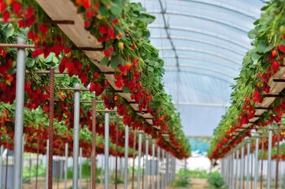

Sobre a empresa
A StrawTech, fundada em 2023 por estudantes da São Paulo Tech School, surge da identificação de lacunas na gestão de temperatura e umidade no cultivo de morangos. Após pesquisa e análises, desenvolvemos um sistema de automação que reduz danos no setor. Mais que uma empresa, somos impulsionados pela inovação para elevar a eficiência agrícola, deixando nossa marca no cultivo de morangos. Junte-se a nós na busca por soluções tecnológicas e sustentáveis.
Mas, afinal, qual é a nossa missão?
Nos comprometemos a implementar sensores inovadores em estufas tipo túnel baixo, meticulosamente projetadas para otimizar o cultivo de morangos. Vai além: fornecemos um software abrangente para monitorar temperatura e umidade, aliado a um suporte integral ao cliente. Na StrawTech, nossa missão é elevar a eficiência agrícola e impulsionar o sucesso dos produtores. Conecte-se conosco enquanto transformamos o panorama do cultivo de morangos com tecnologia e comprometimento incomparáveis.